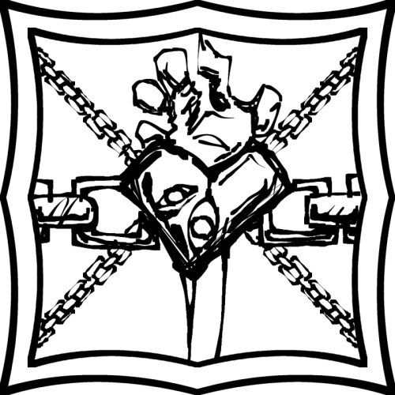
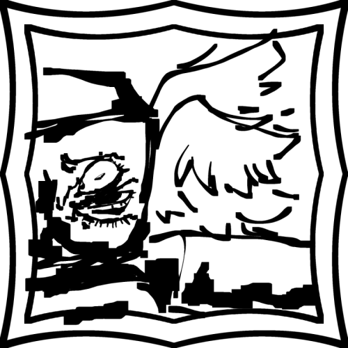

VOW OF HEART
You vow your will to the heart of the Receptacle.
You now wander the world of Compendium, slowly building up the hubris of power that you think deserves.
choose.

VOW OF SOUL
You vow your soul to the world of Compendium.
You have your own heart, body, and free will the world of Compendium adapts to your being, turning itself from start to finish a big sandbox for You to play in.